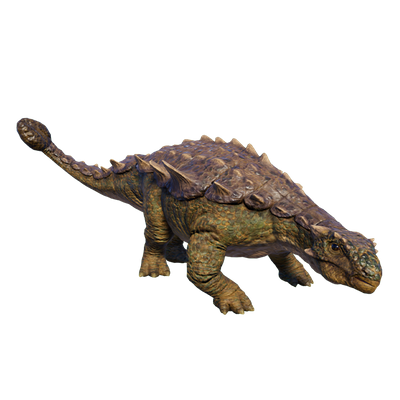

Useful Website
Crichtonsaurus is a genus of ankylosaurid that looks like its more famous relative Ankylosaurus, only much smaller – this dinosaur weighs around 500kg and is approximately 7m in length. Named after the famous author Michael Crichton, the herbivorous Crichtonsaurus is notable for the thick plates on its back and powerful club on the end of its tail that protect it from larger predators.
